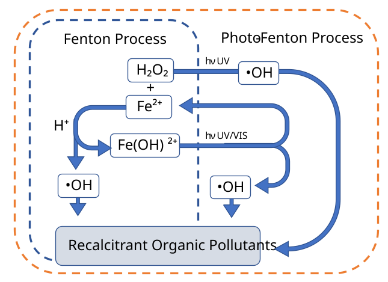
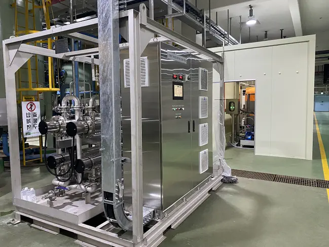

| 工业 UV-AOP 系统主要技术参数 |
|---|
| 灯管类型 | 中压灯 |
| 单支灯管输入功率 | 4 kW, 8 kW, 10 kW, 12 kW, 24 kW |
| 清洗系统 | 在线机械清洗 / 在线机械化学清洗 (选配) |
| 反应器材质 | STS316 / 非金属 |
| 额定压力 | 145 psi (10 bar) |
| 最高水温 | 40°C (104°F) |
| 最高工作温度 | 55°C (131°F) |
| 灯管监测 | 符合 DVGW W294 的紫外线传感器 |
| 控制柜主要技术参数 |
|---|
| 材质 | 喷漆钢板 / STS304 |
| 控制器 | 可编程逻辑控制器（PLC） |
| 电压 / 频率 | 360 ~ 480 ±10% / 50/60 Hz |
| 工作温度 | 0°C~50°C (32°F~120°F) |
| 安装环境 | 室内及室外 |
| 镇流器类型 | 可变输出电子镇流器 |


Personal Information Processing Policy: Neotech UV collects only the minimum necessary information required to process corporate consultations and deliver professional service inquiries.
Data Items Collected: Inquiry Type, Name, Mobile Phone Number, Email Address, and Message Details.
Purpose of Collection: To evaluate and respond to customer inquiries, facilitate engineering consultation, and maintain a historical reference for ongoing client communication.
Retention Period: All submitted information is securely retained for a period of 2 years following receipt, after which it is permanently deleted.
Cookie Policy: Neotech UV does not collect, store, or track cookie data. Our website is designed to be a static information portal. It is a private browsing experience without user tracking or sessions.